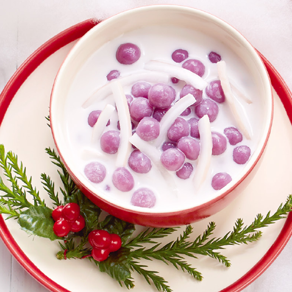

แจกฟรี ! สูตรขนมบัวลอยมันม่วงญี่ปุ่น ขนมบัวลอยมันม่วงญี่ปุ่น จับมันม่วงญี่ปุ่นมาทำขนมไทย หอมกะทิ ลอยเนื้อมะพร้าวอ่อน ทำง่ายปั้นสนุก เพิ่มความฟินให้กับชีวิต
วันนี้นึกอยากกินบัวลอยขึ้นมา แต่ไม่อยากกินบัวลอยแบบเดิม ๆ ที่ปั้นแป้งใส่สีสวย ๆ เท่านั้น จึงพยายามหาสูตรบัวลอยเก๋ ๆ ในตำราอาหาร รวมถึงโซเชียลมีเดีย ในที่สุดก็เจอ ! (ดวงตาเป็นประกาย) กระปุกดอทคอมขอนำเสนอสูตรบัวลอยมันญี่ปุ่นสูตรจากนิตยสารแม่บ้าน แปลงร่างมันญี่ปุ่นเนื้อสีม่วงเข้มที่เอามานึ่ง เผา หรือต้มกับน้ำตาลและขิงเป็นบัวลอยกะทิ ของหวานสุดอร่อยที่ไม่ได้มีแค่แป้งแต่เพิ่มคุณค่าลงไปด้วย แถมยังลอยเนื้อมะพร้าวอ่อนอีกต่างหาก อยากได้สักชามจริง ๆ สมาชิกเว็บไซต์พันทิปดอทคอม
สังขยาฟักทอง ขนมหวานไทยยอดนิยม แจกสูตรความอร่อย สังขยาเนื้อเนียนนุ่มทำอย่างไรมาดูกันค่ะ
ส่วนผสม บัวลอยมันญี่ปุ่น
แป้งข้าวเหนียว 1 ถ้วยตวง
มันญี่ปุ่น (นึ่งสุกและบดละเอียด) 1/2 ถ้วยตวง
น้ำร้อน 6 ช้อนโต๊ะ
แป้งข้าวเหนียว (สำหรับทำแป้งนวล)
น้ำเปล่า (สำหรับต้มเม็ดแป้ง)
น้ำเย็น (สำหรับแช่เม็ดแป้ง)
กะทิ (ความเข้มข้นปานกลาง) 2 ถ้วยตวง
น้ำตาลปี๊บ 2 ช้อนโต๊ะ
น้ำตาลทราย 6 ช้อนโต๊ะ
เกลือป่นหยาบ 3/4 ช้อนชา
เนื้อมะพร้าวเผา (หั่นเป็นเส้น) 1/2 ถ้วยตวง
ใบเตย 2 ใบ
หัวกะทิ 1/4 ถ้วยตวง
วิธีทำบัวลอยมันญี่ปุ่น
1. ผสมแป้งข้าวเหนียว มันญี่ปุ่นบดละเอียด และน้ำร้อนเข้าด้วยกัน นวดจนเนียนและสามารถปั้นเป็นก้อนได้
2. ปั้นแป้งเป็นก้อนกลมขนาดเส้นผ่าศูนย์กลางประมาณ 1/2 เซนติเมตร โรยแป้งนวลเล็กน้อย (เพื่อไม่ให้แป้งติดกัน)
3. ต้มน้ำเปล่าพอเดือด นำเม็ดแป้งลงต้มจนสุกลอยขึ้นมา ตักขึ้นไปแช่น้ำเย็นพอคลายความร้อน เสร็จแล้วตักขึ้นพักไว้ให้สะเด็ดน้ำ
4. ใส่กะทิลงในหม้อ ยกขึ้นตั้งไฟพอร้อน ใส่น้ำตาลปี๊บ น้ำตาลทราย เกลือป่น เนื้อมะพร้าวเผา และใบเตยลงไปต้มพอเดือด เติมหัวกะทิลงไป
5. ใส่แป้งบัวลอยลงในหม้อคนให้เข้ากัน พอเดือดเล็กน้อยยกลง ตักใส่ถ้วย จัดเสิร์ฟ
บัวลอยมันม่วงญี่ปุ่น เมนูขนมไทยใส่ไอเดียด้วยการเอามันญี่ปุ่นไปผสมกับแป้งจนกลายเป็นเม็ดบัวลอยสีม่วง
ดูหน้าตาน่ากินมาก ๆ เลยค่ะ ถ้าจะให้ดีใส่ไข่หวานลงไปอีกสักฟอง รับรองว่า
ของหวานชามนี้อร่อยไม่รู้ลืมจริง ๆ
ขอขอบคุณข้อมูลและภาพประกอบจาก
เว็บไซต์:https://www.kapook.com
Copyright © EAT&EAT nc. สงวนลิขสิทธิ์